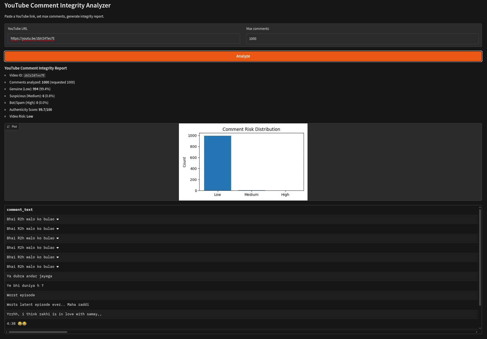

One URL in.
Integrity report out.
Paste any YouTube link and get a per-comment Low / Medium / High risk verdict plus a
per-video Authenticity Score — bot-text classifier, account-farm heuristics, scam regexes
and coordination detection, fused into one decision ladder.
$ python app.py
Running on local URL: http://127.0.0.1:7860
$ analyze("https://youtu.be/dQw4w9WgXcQ", max_comments=1000)
comments fetched ......................... 1000
scored (text + account + spam + coord) ... 1000
─────────────────────────────────────────────────
Genuine (Low): 821 (82.10%)
Suspicious (Medium): 132 (13.20%)
Bot/Spam (High): 47 ( 4.70%)
─────────────────────────────────────────────────
Authenticity Score: 88.70 / 100 → video risk: Low
What it detects
Six components, one pipeline. Everything below runs on a single video URL with zero training at inference time — the trained artifacts are optional (heuristic-only mode works out of the box).
Live comment fetch
YouTube Data API v3 commentThreads.list with pageToken pagination
(100/request, 50 ms sleep), replies included, top-level vs reply flagged.
- maps
commentsDisabled→ clear error - maps
videoNotFound→ clear error - maps quota errors → "try later", never crashes
Bot text classifier
LightGBM binary classifier over TF-IDF vectors — 10k features, 1–2 ngrams, min_df=2,
400 trees, lr 0.05, 48 leaves, class_weight="balanced".
- output = bot probability (0–1)
- absent model → automatic heuristic-only fallback
Account-farm heuristics
Per author_channel_id aggregation: comment volume, distinct videos, unique-text
ratio, URL ratio → one account_risk_score in [0, 1].
- volume spammer: ≥10 comments → +0.35
- copy-paste account: unique-ratio ≤0.4 → +0.30
Scam pattern engine
Regex battery for the classic YouTube scam surface: t.me, wa.me,
bit.ly, "whatsapp / telegram / dm me / inbox me / contact me", "free recovery",
"lost crypto", "signal group".
- catches Unicode-bold-digit evasion (𝟣𝟤𝟥…)
- capped at 0.50 — signal, not verdict
Coordination detection
Normalized text (lowercase, whitespace-collapsed, punctuation-stripped) posted by
≥2 distinct accounts ≥2 times → coordination_score = 0.20.
- catches cross-account copy-paste brigades
- needs ≥30-char comments (noise guard)
Integrity report
Per-comment verdict + reason, per-video Authenticity Score, top-15 suspicious comments table, matplotlib risk-distribution chart, all exportable.
- full scored DataFrame downloadable
- score formula:
(low·1 + med·0.5 + high·0)/total·100
Pipeline, left to right
One entry, one exit. Nothing between them is stateful — every comment passes through all four
signals before decide() applies the ordered rule ladder.
# signal fusion, condensed
text_bot_prob → suspicion: strong ≥0.85 · moderate ≥0.60 · weak ≥0.40
account_risk_score → farm risk: ≥0.60 High · ≥0.45 Medium · ≥0.30 supports
spam_pattern_score → scam bait: ≥0.30 Medium · ≥0.20 supports
coordination_score → brigade: ≥0.20 (with ≥30 chars) supports
decide(): hard_scam → High 0.90
account_risk ≥0.60 → High 0.85
len <20, no scam → Low 0.05
strong suspicion + support → High 0.75
suspicion only → Medium 0.45
structural only → Medium 0.35
else → Low 0.05Every threshold, exactly as implemented
No black boxes. These tables are the code — copy the rules and you can rebuild the classifier's decision logic by hand.
1 · Account-farm risk account_risk_score (cap 1.0)
| condition | points | rationale |
|---|---|---|
videos_commented ≥ 3 | +0.40 | spams across many videos — classic farm behavior |
videos_commented == 2 | +0.20 | weaker version of the above |
total_comments ≥ 10 | +0.25 | volume, not conversation |
total_comments ≥ 5 | +0.15 | partial volume |
unique_text_ratio ≤ 0.40 | +0.25 | copy-pasted text (unique ÷ total comments) |
unique_text_ratio ≤ 0.70 | +0.10 | mild repetition |
url_ratio ≥ 0.40 | +0.20 | 40%+ of comments carry links |
2 · Scam patterns spam_pattern_score (cap 0.50)
| regex class | points | matches |
|---|---|---|
| link | +0.20 | http, www., t.me, wa.me, bit.ly, tinyurl |
| contact bait | +0.30 | whatsapp, telegram, dm me, inbox me, contact me, free recovery, lost crypto, signal group |
| unicode evasion | +0.30 | bold digits (𝟣𝟤𝟥𝟦𝟧𝟨𝟩𝟪𝟫𝟢) AND a contact word — bypasses plain-text filters |
3 · Coordination coordination_score
| condition | points | rationale |
|---|---|---|
same normalized text, ≥2 unique accounts, ≥2 posts | +0.20 | identical wording from different accounts = brigade |
4 · Text suspicion tiers (from model probability)
| probability | tier | effect |
|---|---|---|
p ≥ 0.85 | strong | can trigger High with any support signal |
0.60 ≤ p < 0.85 | moderate | Medium on its own |
0.40 ≤ p < 0.60 | weak | informational only — never decides |
p < 0.40 | none | ignored |
5 · Decision ladder decide() — first match wins
| # | rule | level | score | reason string |
|---|---|---|---|---|
| 1 | hard_scam == 1 | High | 0.90 | Hard scam/contact pattern |
| 2 | account_risk_score ≥ 0.60 | High | 0.85 | Strong account farm risk |
| 3 | len < 20 and no scam flag | Low | 0.05 | Short comment with no scam signal |
| 4 | strong suspicion AND (spam ≥0.20 OR account ≥0.30) | High | 0.75 | Strong text suspicion + support |
| 5 | suspicion in {strong, moderate} | Medium | 0.45 | Text suspicion |
| 6 | spam ≥0.30 OR account ≥0.45 | Medium | 0.35 | Structural signals |
| 7 | fallback | Low | 0.05 | No strong bot evidence |
video_risk = Low if ≥85 · Medium if ≥60 · High otherwise
# hard_scam regexes: free recovery · lost crypto · signal group · guaranteed profit · whatsapp · telegram · t.me · wa.me · bit.ly · tinyurl · "dm me" · "inbox me" · "contact me"+context · unicode-bold digits+contact word
The UI
Gradio, zero frontend code. URL in → markdown report + distribution chart + top-15 suspicious table out. Screenshot from a live run.

From zero to running — 5 minutes
Copy → paste → run. Every command is exact. If a step fails, the troubleshooting table at the bottom maps the error message to the fix.
Prerequisites
Python 3.10+. A Google account. That's it — the page you're reading has no build
step, and the app's only external service is YouTube.
Get a YouTube Data API v3 key (2 min)
Go to console.cloud.google.com → create a project → APIs & Services →
Library → enable YouTube Data API v3 → Credentials → Create Credentials → API key.
Copy the key. Free tier: 10,000 quota units/day — one comment fetch = 1 unit.
Clone + install
git clone https://github.com/<your-username>/yt-authentic.git
cd yt-authentic
python -m venv .venv
source .venv/bin/activate # Windows: .venv\Scripts\activate
pip install -r requirements.txtSet the key
# macOS / Linux
export YOUTUBE_API_KEY="AIza..." # ← paste your key
# Windows PowerShell
$env:YOUTUBE_API_KEY="AIza..."Run
python app.py
# → Running on local URL: http://127.0.0.1:7860Open http://127.0.0.1:7860, paste any YouTube URL, set
max comments, hit Analyze. Done. No model file? It still works — the three
structural signals carry the run (heuristic-only mode).
Optional — add the trained model
Run the first 8 cells of notebook/yt-authentic-1-2v.ipynb (Kaggle) to train
LightGBM on your labeled dataset. It dumps two files — put them next to app.py:
yt-authentic/
├── app.py
├── bot_text_model_v2.pkl # LightGBM
└── tfidf_vectorizer_v2.pkl # TF-IDF (10k, 1-2 ngrams)On next launch the loader picks them up and text suspicion activates — no code change.
Kaggle alternative (no local setup)
Upload notebook/yt-authentic-1-2v.ipynb to Kaggle, attach your datasets, add a
secret named YOUTUBE_API_KEY (Add-ons → Secrets), run all cells. The Gradio
share=True link appears in the last cell's output.
Publish this page
cd yt-authentic
git init && git add . && git commit -m "yt-authentic: site + app"
git branch -M main
git remote add origin https://github.com/<your-username>/yt-authentic.git
git push -u origin mainThen on GitHub: repo → Settings → Pages → Source: Deploy from a
branch → Branch: main / / (root) → Save. Live at
https://<your-username>.github.io/yt-authentic/ in ~1 minute. That's the page
you're reading right now.
Troubleshooting — error → fix
| you see | cause | fix |
|---|---|---|
Set YOUTUBE_API_KEY environment variable first. | key not exported, or new terminal | re-run step 3, then restart app.py |
YouTube API quota exceeded. Try later. | 10,000 units/day used up | wait for UTC reset, or use a second project |
Comments are disabled on this video. | video has comments off | pick another video — app is working correctly |
Video not found / invalid link. | bad URL / private video | paste the full watch?v= URL |
| everything is "Low", no model output | HAS_MODEL=False | do step 5, or accept heuristic-only mode |
| 403 on the API key | API key restrictions misconfigured | key → Edit → API restrictions → allow YouTube Data API v3 |